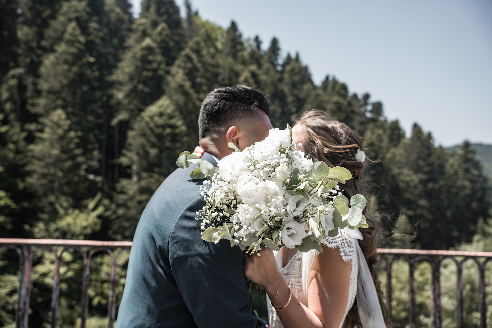
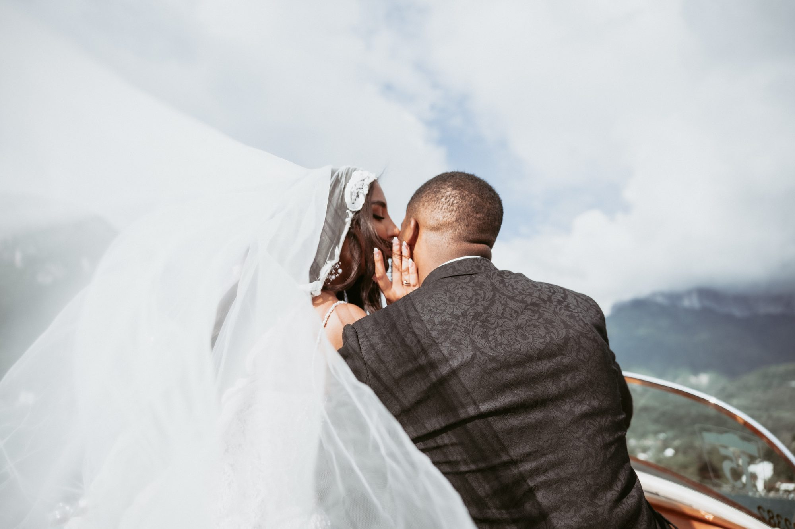
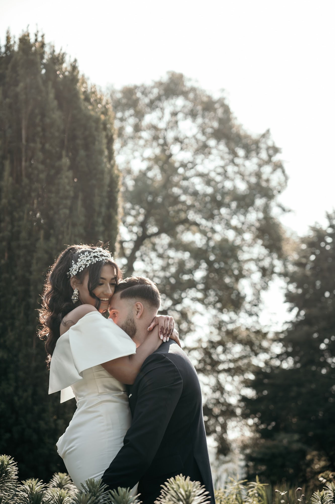
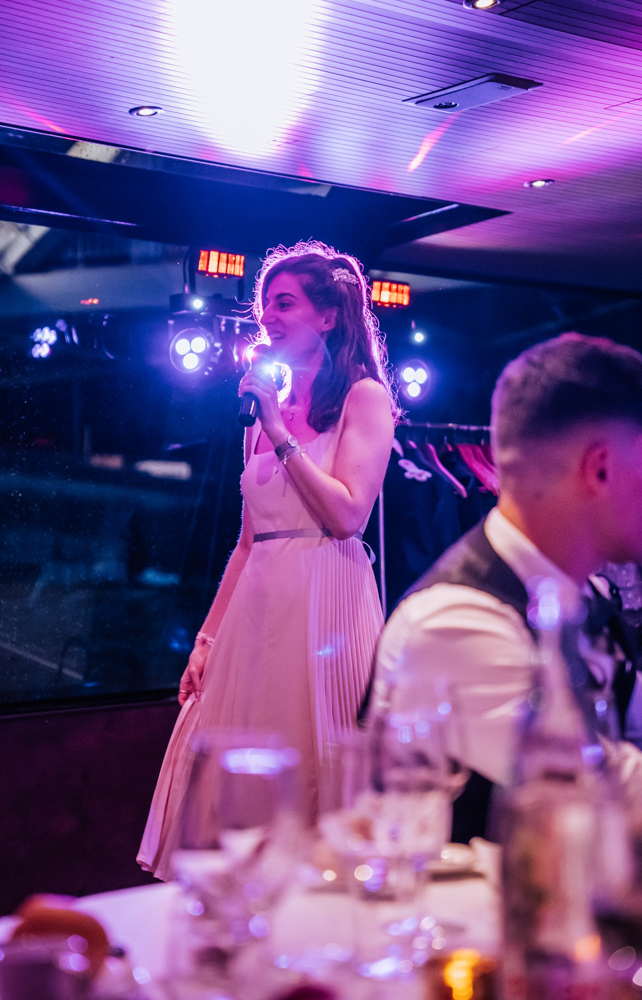
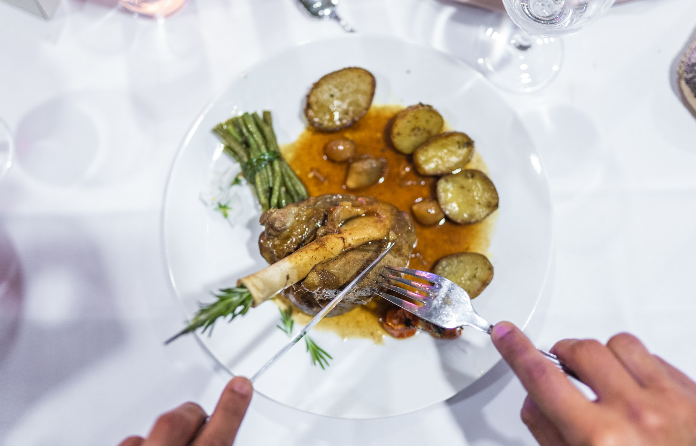
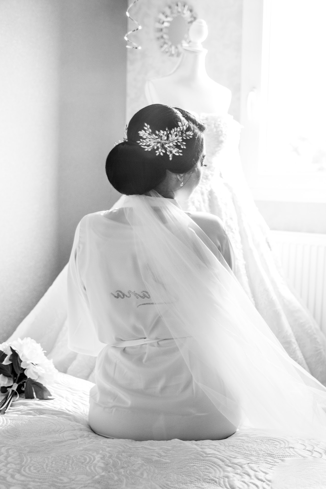

Wedding & event photographer and videographer in Lyon, France
Editorial images, real emotions. I photograph and film weddings, couples, private celebrations, corporate events and products, in Lyon, across south-east France and abroad.
Check my availabilityWhat I do
Photography & films

Weddings
From getting ready to the last dance, told like a film in chapters.

Wedding films
Short teasers to watch with the sound on and share with family abroad.

Couples & portraits
Engagement sessions and editorial portraits.

Events & corporate
Seminars, company parties, private celebrations, brand portraits.

Product & food
Packshots, lifestyle scenes, restaurants and chefs.

Black & white
Light, gestures, emotion. Nothing else.
Journal
Planning a wedding or an event in France

Contact
Tell me about your plans
Share your date, venue and what you have in mind. I will get back to you quickly.